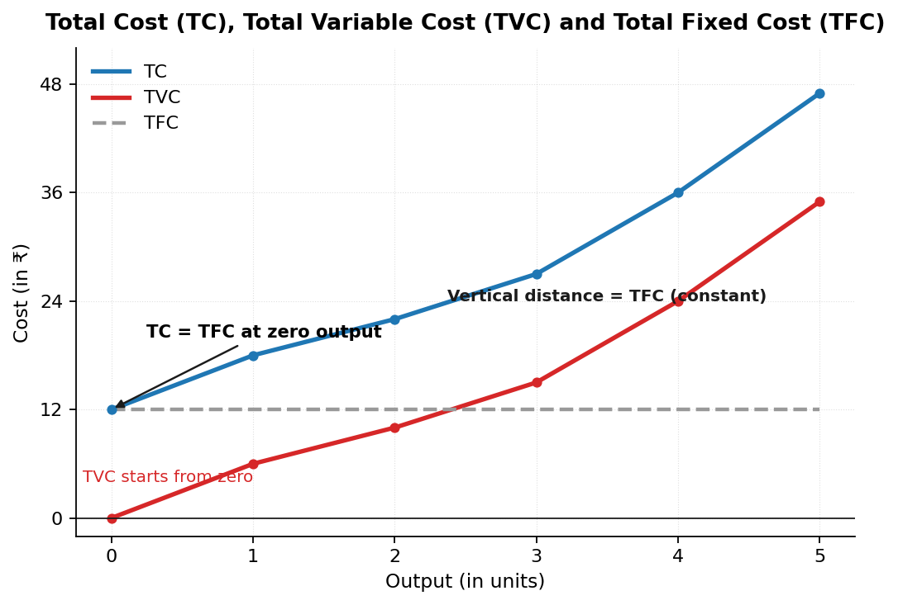
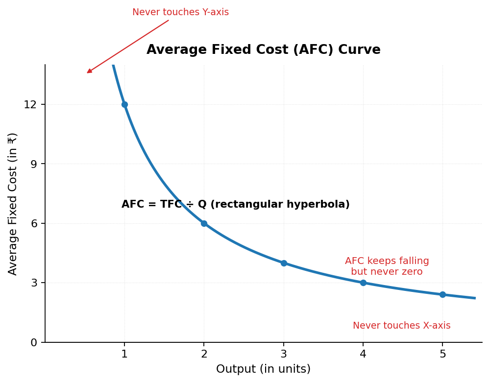
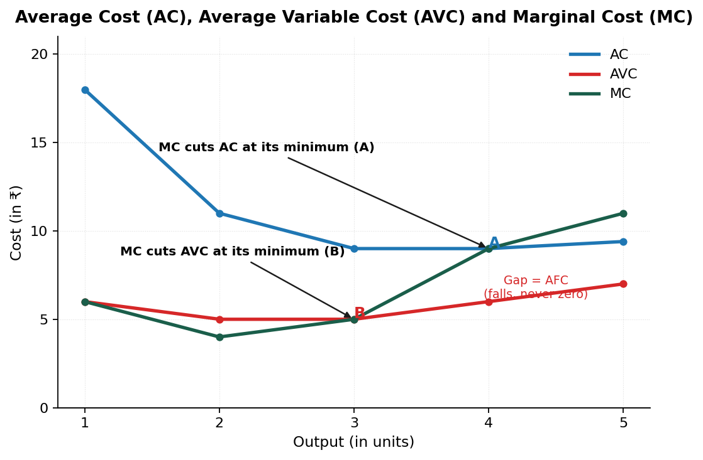

Cost
Short sentences. One idea at a time. Read one section. Do each check. Then continue.
Key Terms — Read These First
Learn these definitions first. Use them in every answer.
| Term | Definition |
|---|---|
| Cost | Money value of inputs used in production |
| Explicit Cost | Actual money paid to outsiders for inputs |
| Implicit Cost | Estimated value of owner supplied inputs |
| Cost Function | Relation between cost and output. C = f(q) |
| Opportunity Cost | Cost of next best alternative foregone |
| TFC | Costs not varying with output. Never zero |
| TVC | Costs varying directly with output. Zero at zero output |
| TC | Total expenditure on factors. TC = TFC + TVC |
| AFC | Per unit fixed cost. AFC = TFC / Q |
| AVC | Per unit variable cost. AVC = TVC / Q |
| AC | Per unit total cost. AC = TC / Q |
| ATC | Other name for AC. Average Total Cost |
| MC | Addition to TC from one more unit |
| Rectangular Hyperbola | Shape of AFC curve. Area stays constant |
| U-shaped Curves | AVC, AC, MC shapes due to LVP |
| Inversely S-shaped | Shape of TVC and TC curves |
mindmap
root((Chapter 6))
Cost
Explicit plus Implicit
Function
C equals f of q
Totals
TFC - Fixed flat
TVC - Varies S-shape
TC - Sum S-shape
Averages
AFC - Falls hyperbola
AVC - U-shape
AC - U-shape
Marginal
MC - U-shape
Cuts AVC AC minimum
1. Meaning of Cost
Cost in economics includes actual expenditure on inputs and imputed value of owner supplied inputs.
- Explicit cost is actual payment to outsiders.
- Implicit cost is estimated value of own inputs.
- Implicit cost includes normal profit.
- Formula: Cost = Explicit Cost + Implicit Cost.
CHECK — click to answer
Say the definition of cost in one sentence. Name its two parts: explicit and implicit.2. Explicit Cost and Implicit Cost
Explicit Cost is actual money expenditure on inputs or payment made to outsiders for factor services.
Implicit Cost is estimated value of inputs supplied by owners including normal profit.
- Explicit: wages 10000. Raw material 200000. Insurance premium.
- Implicit: rent of own land 50000. Interest on own capital. Own labour.
| Basis | Explicit Cost | Implicit Cost |
|---|---|---|
| Meaning | Payment to outsiders for factor services | Cost of self supplied factors |
| Money Payment | Involves actual money payment | Involves imputed value. No money paid |
| Example | Wages, rent, insurance premium | Interest on capital, rent of own land |
Point: Owner withdrawing 10000 from bank to buy machinery gives explicit cost 10000. Interest foregone on bank amount is implicit cost.
CHECK — click to answer
Wages paid 10000. Rent of own shop 50000. Which is explicit? Answer: Wages 10000.3. Cost Function
Cost function refers to functional relation between cost and output.
C = f(q)
Where: C is cost of production, q is quantity of output, f is functional relationship.
Point: Output rises. Cost rises. Rate differs as per law.
CHECK — click to answer
Write the cost function formula with all symbols: C = f(q).4. Opportunity Cost
Opportunity cost is cost of next best alternative foregone.
- Choice between wheat and rice on same land.
- Choose wheat. Leave rice. Rice value is cost.
- Every decision leaves something. That loss is cost.
CHECK — click to answer
Choose wheat. Leave rice. What is opportunity cost? Answer: Value of rice.5. Total Fixed Cost
Fixed costs refer to those costs which do not vary directly with level of output.
| Output | 0 | 1 | 2 | 3 | 4 | 5 |
|---|---|---|---|---|---|---|
| TFC | 12 | 12 | 12 | 12 | 12 | 12 |
Read: Output rises from 0 to 5. TFC stays at 12.
- TFC curve is horizontal straight line parallel to X-axis.
- TFC stays same at all output levels.
- TFC is never zero even at zero output.
- Examples: factory rent, interest on capital, permanent staff salary, building rent.

CHECK — click to answer
Output is zero. What is TFC? Answer: 12.6. Total Variable Cost
Variable costs refer to those costs which vary directly with level of output.
| Output | 0 | 1 | 2 | 3 | 4 | 5 |
|---|---|---|---|---|---|---|
| TVC | 0 | 6 | 10 | 15 | 24 | 35 |
Read: Output rises from 0 to 5. TVC rises from 0 to 35.
- TVC curve is inversely S-shaped.
- TVC first rises at decreasing rate. Later rises at increasing rate.
- TVC is zero at zero output.
- Examples: casual labour wages, raw material, fuel.
CHECK — click to answer
Output is zero. What is TVC? Answer: 0.7. Difference Between TVC and TFC
| Basis | Total Variable Cost | Total Fixed Cost |
|---|---|---|
| Meaning | Costs varying directly with output | Costs not varying directly with output |
| Time Period | Can be changed in short run | Cannot be changed in short run |
| Cost at zero output | Zero with no production | Never zero even with no production |
| Factors | Incurred on variable factors | Incurred on fixed factors |
| Shape | Inversely S-shaped curve | Horizontal line parallel to X-axis |
| Example | Casual wages, raw material | Permanent salary, building rent, licence fee |
CHECK — click to answer
Name the shape of TVC (inversely S-shaped) and TFC (horizontal line).8. Total Cost
Total Cost is total expenditure incurred by a firm on factors required for production.
TC = TFC + TVC
| Output | TFC | TVC | TC = TFC + TVC |
|---|---|---|---|
| 0 | 12 | 0 | 12 |
| 1 | 12 | 6 | 18 |
| 2 | 12 | 10 | 22 |
| 3 | 12 | 15 | 27 |
| 4 | 12 | 24 | 36 |
| 5 | 12 | 35 | 47 |
Read: At 2 output, TC is 12 + 10 = 22.
- TC curve is inversely S-shaped. Derives shape from TVC.
- TC equals TFC at zero output. TC is 12 at zero.
- TC and TVC curves stay parallel. Vertical distance is TFC 12.
- TC is always greater than or equal to TFC.
flowchart TD Q[What is TC?] Q -->|Fixed part| F[TFC stays 12] Q -->|Variable part| V[TVC rises 0 to 35] F --> S[TC = TFC + TVC] V --> S
CHECK — click to answer
TFC is 12. TVC is 15. What is TC? Answer: 27.9. Average Fixed Cost
Average Fixed Cost refers to per unit fixed cost of production.
AFC = TFC / Q
| Output | TFC | AFC = TFC / Q |
|---|---|---|
| 1 | 12 | 12 / 1 = 12 |
| 2 | 12 | 12 / 2 = 6 |
| 3 | 12 | 12 / 3 = 4 |
| 4 | 12 | 12 / 4 = 3 |
| 5 | 12 | 12 / 5 = 2.40 |
Read: Output rises from 1 to 5. AFC falls from 12 to 2.40.
- AFC slopes downwards. AFC falls with more output.
- AFC is rectangular hyperbola. Area AFC x Q stays same.
- AFC never touches X-axis. TFC never becomes zero.
- AFC never touches Y-axis. At zero output value is infinite.
Reason for fall: Same TFC divided by more units gives less AFC.

CHECK — click to answer
TFC is 12. Output is 4. What is AFC? Answer: 3.10. Average Variable Cost
Average Variable Cost refers to per unit variable cost of production.
AVC = TVC / Q
| Output | TVC | AVC = TVC / Q |
|---|---|---|
| 1 | 6 | 6 / 1 = 6 |
| 2 | 10 | 10 / 2 = 5 |
| 3 | 15 | 15 / 3 = 5 |
| 4 | 24 | 24 / 4 = 6 |
| 5 | 35 | 35 / 5 = 7 |
Read: AVC falls from 6 to 5. Then rises from 5 to 7.
Point: AVC curve is U-shaped due to Law of Variable Proportions.
CHECK — click to answer
TVC is 24. Output is 4. What is AVC? Answer: 6.11. Average Cost
Average Cost refers to per unit total cost of production. Other name: Average Total Cost.
AC = TC / Q AC = AFC + AVC
| Output | TVC | AVC | AFC | AC = AFC + AVC |
|---|---|---|---|---|
| 1 | 6 | 6 | 12 | 12 + 6 = 18 |
| 2 | 10 | 5 | 6 | 6 + 5 = 11 |
| 3 | 15 | 5 | 4 | 4 + 5 = 9 |
| 4 | 24 | 6 | 3 | 3 + 6 = 9 |
| 5 | 35 | 7 | 2.40 | 2.40 + 7 = 9.40 |
Read: At 2 output, AC is 6 + 5 = 11.
Point: AC curve is U-shaped due to Law of Variable Proportions.
CHECK — click to answer
AFC is 4. AVC is 5. What is AC? Answer: 9.12. Relation Between AC, AVC and AFC
- AC always lies above AVC. AC includes AFC plus AVC.
- Gap between AC and AVC equals AFC. Gap falls with output.
- AC and AVC never meet. AFC never becomes zero.
- AVC minimum comes first. AC minimum comes later.
- Both AC and AVC are U-shaped due to Law of Variable Proportions.
Reason for late AC minimum: AC keeps falling due to falling AFC even after AVC starts rising.
| Property | Result |
|---|---|
| AC vs AVC position | AC stays above AVC |
| Gap between AC and AVC | Equals AFC. Falls with output |
| Do AC and AVC meet | Never. AFC never zero |
| Minimum point order | AVC minimum first. AC minimum right |
CHECK — click to answer
Gap between AC and AVC is 3. What is AFC? Answer: 3.13. Marginal Cost
Marginal Cost refers to addition to total cost when one more unit of output is produced.
MC = TCn - TCn-1 MC = Change in TC / Change in Q
Where: MCn is marginal cost of nth unit, TCn is total cost of n units, TCn-1 is total cost of n-1 units.
| Output | TFC | TVC | TC | MC = TCn - TCn-1 |
|---|---|---|---|---|
| 0 | 12 | 0 | 12 | — |
| 1 | 12 | 6 | 18 | 18 - 12 = 6 |
| 2 | 12 | 10 | 22 | 22 - 18 = 4 |
| 3 | 12 | 15 | 27 | 27 - 22 = 5 |
| 4 | 12 | 24 | 36 | 36 - 27 = 9 |
| 5 | 12 | 35 | 47 | 47 - 36 = 11 |
Read: At 2 output, MC is 22 − 18 = 4.
- MC curve is U-shaped due to Law of Variable Proportions.
- MC is not affected by fixed costs. Only TVC changes MC.
- MC can be derived from TVC. MCn = TVCn − TVCn-1.
CHECK — click to answer
TC is 27 at 3 units. TC is 22 at 2 units. What is MC? Answer: 5.14. Relation Between MC and AC
- When MC is less than AC, AC falls.
- When MC equals AC, AC is at minimum point.
- When MC is more than AC, AC rises.
- MC cuts AC at its minimum point.
| Output | TC | AC | MC | Phase |
|---|---|---|---|---|
| 0 | 12 | — | — | — |
| 1 | 18 | 18 | 6 | MC less than AC. AC falls |
| 2 | 22 | 11 | 4 | MC less than AC. AC falls |
| 3 | 27 | 9 | 5 | MC less than AC. AC falls |
| 4 | 36 | 9 | 9 | MC equal AC. AC minimum |
| 5 | 47 | 9.40 | 11 | MC more than AC. AC rises |
Read: At 4 output, MC equals AC at 9. AC is minimum.
Point: AVC can fall even when MC rises. Condition is MC less than AVC.
CHECK — click to answer
MC is 4. AC is 11. Is AC falling or rising? Answer: Falling.15. Relation Between MC, AC and AVC
- MC cuts AVC at its minimum point. MC cuts AC at its minimum point.
- AC minimum lies right of AVC minimum. AC falls longer due to AFC.
- AC exceeds AVC by AFC. Gap falls with output.
- AC and AVC never intersect. AFC never zero.
- All three are U-shaped due to Law of Variable Proportions.
| Condition | Effect |
|---|---|
| MC less than AVC | AVC falls |
| MC equal AVC | AVC minimum. MC cuts AVC |
| MC more than AVC | AVC rises |
| MC less than AC | AC falls |
| MC equal AC | AC minimum. MC cuts AC |
| MC more than AC | AC rises |
Order: MC cuts AVC first. Then MC cuts AC later.

CHECK — click to answer
Which minimum comes first? Answer: AVC minimum. Then AC minimum.16. Relation of MC with TC and TVC
16.1 TC and MC
- When MC falls, TC rises at diminishing rate.
- When MC is minimum, TC stops rising at decreasing rate.
- When MC rises, TC rises at increasing rate.
- When MC is constant, TC rises at constant rate.
- Formula: MCn = TCn − TCn-1.
| TC Behaviour | MC Behaviour |
|---|---|
| TC rises at diminishing rate | MC falls |
| End of diminishing rise | MC minimum |
| TC rises at increasing rate | MC rises |
| TC rises at constant rate | MC constant |
16.2 TVC and MC
- MC is addition to TVC from one more unit.
- Area under MC curve equals TVC with divisible output.
- MC is independent of TFC. Only TVC affects MC.
CHECK — click to answer
TC rises at diminishing rate. What does MC do? Answer: MC falls.17. All Curves at a Glance
| Curve | Formula | Shape |
|---|---|---|
| TFC | TFC = TC - TVC | Horizontal line parallel to X-axis |
| TVC | TVC = TC - TFC | Inversely S-shaped. Zero at zero output |
| TC | TC = TFC + TVC | Inversely S-shaped. Starts at TFC |
| AFC | AFC = TFC / Q | Downward hyperbola. Never touches axes |
| AVC | AVC = TVC / Q | U-shaped due to LVP |
| AC | AC = TC / Q = AFC + AVC | U-shaped due to LVP |
| MC | MC = TCn - TCn-1 | U-shaped. Cuts AVC and AC at minimum |
- U-shaped average and marginal curves are AVC, AC, MC. TVC and TC are inversely S-shaped. TFC is horizontal.
- TFC and TC start from same Y-axis point. TC equals TFC at zero.
- Incorrect formula for TC is TC = sum of MC. Misses TFC. Correct is TC = sum of MC + TFC.
CHECK — click to answer
Name three U-shaped curves (AVC, AC, MC) and two inversely S-shaped curves (TVC, TC).18. Numericals — Solved Tables
18.1 Find AVC and MC from TVC
| Output | TVC | AVC = TVC / Q | MC = TVCn - TVCn-1 |
|---|---|---|---|
| 1 | 10 | 10 | 10 |
| 2 | 16 | 8 | 6 |
| 3 | 27 | 9 | 11 |
| 4 | 40 | 10 | 13 |
Read: At 2 output, MC is 16 − 10 = 6. AVC is 16 / 2 = 8.
18.2 Find TFC, TVC, ATC, AFC, AVC, MC from TC (TFC = 60)
| Output | TC | TFC | TVC | ATC | AFC | AVC | MC |
|---|---|---|---|---|---|---|---|
| 0 | 60 | 60 | 0 | — | — | — | — |
| 1 | 80 | 60 | 20 | 80 | 60 | 20 | 20 |
| 2 | 100 | 60 | 40 | 50 | 30 | 20 | 20 |
| 3 | 111 | 60 | 51 | 37 | 20 | 17 | 11 |
| 4 | 116 | 60 | 56 | 29 | 15 | 14 | 5 |
| 5 | 130 | 60 | 70 | 26 | 12 | 14 | 14 |
| 6 | 150 | 60 | 90 | 25 | 10 | 15 | 20 |
Read: At 3 output, TVC is 111 − 60 = 51. MC is 111 − 100 = 11.
18.3 Find TC from TVC with TFC 60
| Output | TVC | TFC | TC = TFC + TVC |
|---|---|---|---|
| 0 | 0 | 60 | 60 |
| 1 | 30 | 60 | 90 |
| 2 | 40 | 60 | 100 |
| 3 | 45 | 60 | 105 |
| 4 | 55 | 60 | 115 |
| 5 | 75 | 60 | 135 |
| 6 | 120 | 60 | 180 |
18.4 Find Missing TVC from TC with TFC 60
| Output | TC | TFC | TVC = TC - TFC |
|---|---|---|---|
| 0 | 60 | 60 | 0 |
| 1 | 80 | 60 | 20 |
| 2 | 100 | 60 | 40 |
| 3 | 111 | 60 | 51 |
| 4 | 116 | 60 | 56 |
| 5 | 130 | 60 | 70 |
| 6 | 150 | 60 | 90 |
18.5 Find TFC and TVC from TC with TFC 80
| Output | TC | TFC | TVC = TC - TFC |
|---|---|---|---|
| 0 | 80 | 80 | 0 |
| 1 | 102 | 80 | 22 |
| 2 | 122 | 80 | 42 |
| 3 | 140 | 80 | 60 |
| 4 | 156 | 80 | 76 |
CHECK — click to answer
TC is 100. TFC is 60. What is TVC? Answer: 40.19. Fast Revision — One Page
- Cost = Explicit + Implicit. Explicit pays outsiders. Implicit values own inputs.
- Cost function is C = f(q). Opportunity cost is next best left.
- TFC stays 12 at all outputs. Horizontal line. Never zero.
- TVC rises 0, 6, 10, 15, 24, 35. Inversely S-shape. Zero at zero.
- TC = TFC + TVC. Values 12, 18, 22, 27, 36, 47. Parallel to TVC.
- AFC = TFC / Q. Values 12, 6, 4, 3, 2.40. Rectangular hyperbola.
- AVC = TVC / Q. Values 6, 5, 5, 6, 7. U-shaped.
- AC = AFC + AVC. Values 18, 11, 9, 9, 9.40. U-shaped.
- MC = TCn - TCn-1. Values -, 6, 4, 5, 9, 11. U-shaped.
- AC stays above AVC. Gap is AFC. Never meet.
- AVC minimum comes first. AC minimum comes right.
- MC less than AC means AC falls. MC equal AC means AC minimum. MC more means AC rises.
- MC cuts AVC first. Then cuts AC. Both at minimum.
- TC diminishing rise means MC falls. TC increasing rise means MC rises. TC constant rise means MC constant.
- Area under MC equals TVC. MC ignores TFC.
- U-shaped average and marginal curves are AVC, AC, MC. S-shaped are TVC, TC.
20. Exam Questions With Answers
Self-Check Quiz
Answer each question. Click Show answer to verify. Score: count each correct answer.